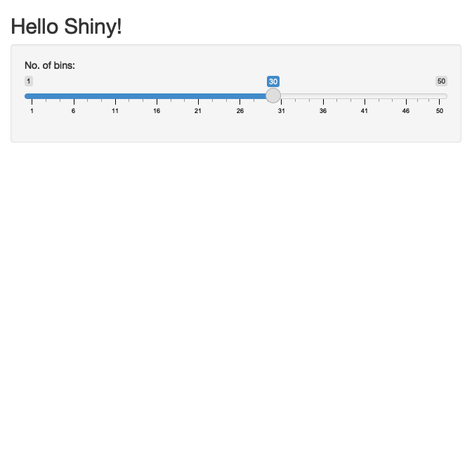
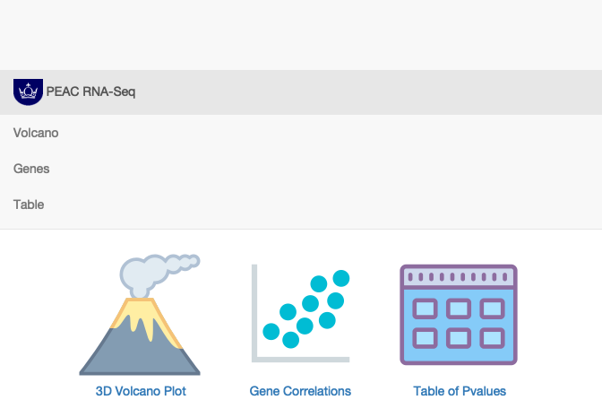

- Introduction
- Structure of a Shiny App
- Basic Example
- PEAC Shiny Example
- Hosting and Deploying shiny apps
Introduction
This tutorial provides an example for deploying Shiny Apps using the interactive visualisations created by volcano3D. The goal of this example is to generate a tool similar to the web page available at https://peac.hpc.qmul.ac.uk.
Getting Started
Install Shiny
install.packages("shiny")Install volcano3D
Install from Github

library(devtools)
install_github("KatrionaGoldmann/volcano3D")
library(volcano3D)Install the sample data
The sample data used in this vignette can be loaded from the volcano3Ddata package.
devtools::install_github("KatrionaGoldmann/volcano3Ddata")Structure of a Shiny App
Shiny is an R package that makes it easy to build interactive web applications straight from R. These apps are build from three components:
a user interface object
a server function
a call to the shinyApp function
The user interface (ui) object controls the layout and appearance of your app. The server function contains the instructions required to build your app. Finally the shinyApp function creates Shiny app objects from an explicit UI/server pair.
To find out more information about shiny, as well as tutorials and examples visit the shiny website.
Basic Example
Using the first example from the shiny website we can create a very basic shiny app. First we build user interface. This sets up the layout and appearance of the app. In this case we will create a histogram, ‘distPlot’, with a given number of bins selected by the ‘bins’ input:
library(shiny)
ui <- fluidPage(
titlePanel("Hello Shiny!"),
sidebarLayout(
sidebarPanel(
sliderInput("bins", label = "No. of bins:", min = 1, max = 50,
value = 30)
),
mainPanel(plotOutput(outputId = "distPlot"))
)
)Next we build a server which contains the instructions and functions we needs to interact with the ui and build the app:
server <- function(input, output) {
output$distPlot <- renderPlot({
x <- faithful$waiting
bins <- seq(min(x), max(x), length.out = input$bins + 1)
hist(x, breaks = bins, col = "#75AADB", border = "white",
xlab = "Waiting time to next eruption (in mins)",
main = "Histogram of waiting times")
})
}Lastly we call the shinyApp function to create an application. When run locally this open an interactive app, but for the sake of this vignette it is has been left as non-interactive.

PEAC Shiny Example
In this example we will create a 3D volcano app similar to the first three tabs from the PEAC webpage. First we will load in the objects we need:
library(volcano3D)
library(volcano3Ddata)
data(syn_data)Then we can create the polar volcano3D object:
syn_polar <- polar_coords(sampledata = syn_metadata,
contrast = "Pathotype",
pvalues = syn_pvalues,
expression = syn_rld,
p_col_suffix = "pvalue",
padj_col_suffix = "padj",
fc_col_suffix = "log2FoldChange",
multi_group_prefix = "LRT",
non_sig_name = "Not Significant",
significance_cutoff = 0.01,
label_column = NULL,
fc_cutoff = 0.1)PEAC UI
The user interface for this app is slightly more complicated than the previous example and is made up of four tab panels:
- The navigation page: this contains images/icons which link to each of the other tabs
- The 3D volcano plot page: this contains the 3D volcano plot for synovium
- The gene lookup page: this allows users to look up specific genes from a dropdown
- The pvalue table page: this contains a table with the statistics for all genes
This requires a few additional packages to be loaded:
- shinycssloaders: This allows spinners to be used while plots and data load
- DT: for data frame handling
- plotly: for interactive plots
- ggpubr: for ggplot creation and handling
library(shinycssloaders)
library(plotly)
library(DT)
library(ggpubr)
ui <- navbarPage(
windowTitle="PEAC RNA-Seq",
selected="a",
fluid=TRUE,
tags$style(type="text/css", "body {padding-top: 0px;}"),
id="mainNavbarPage",
tags$head(tags$link(rel="shortcut icon", href="favicon.ico")),
# Tab 1: The navigation page with links to other tabs
tabPanel(
div(
img(
src="http://qm-web.chem.qmul.ac.uk/qm-resources/images/crown_tab.gif",
height=30, style="padding: 0px 0px;"), "PEAC RNA-Seq"),
value="a",
fluidPage(
fluidRow(
column(12, align="center",
actionLink(
"link_to_tabpanel_v",
div(img(
src="https://bit.ly/39LH4Nv",
height=150, width=150),
HTML("<br/>3D Volcano Plot"),
style="display: inline-block; padding: 0px 10px 0px 10px;")),
actionLink(
"link_to_tabpanel_g",
div(img(src="https://bit.ly/2yGQSvk",
height=150, width=150),
HTML("<br/>Gene Correlations"),
style="display: inline-block; padding: 0px 10px 0px 10px;")),
actionLink(
"link_to_tabpanel_c",
div(img(src="https://bit.ly/3dVXPJ7",
height=150, width=150),
HTML("<br/>Table of Pvalues"),
style="display: inline-block; padding: 0px 10px 0px 10px;")))
)
)),
# Tab 2: 3D volcano plot
tabPanel("Volcano", value="v",
fluidPage(
column(8, withSpinner(plotlyOutput("volcano", height=720))),
column(4,
fluidRow(
# option for data type
column(4, radioButtons("data_type",
label=h5("Polar radius"),
choices=
list("Z score"=1,
"Fold change"=2),
selected=1)),
# option for colour scheme (discrete or continuous)
column(4, radioButtons("colour_type",
label=h5("Colour scheme"),
choices=list("Discrete"=1,
"Continuous"=2),
selected=1))),
fluidRow(plotOutput("boxplots", height=400))
))
),
# Tab 3: Gene search:
tabPanel("Genes", value="g",
fluidPage(
column(3,
selectizeInput(
"gene", label=h5("Select a Gene"),
choices=syn_polar@polar$label,
options=list(
onInitialize=I(
'function() { this.setValue(""); }')))),
column(9, plotOutput("gene_plots")))
),
# Tab 4: table setup:
tabPanel("Table", value="t",
fluidPage(
column(
2,
checkboxGroupInput(
'group',
'Select upregulated groups',
levels(syn_polar@polar$sig)[-1],
# by default select all significant
selected=levels(syn_polar@polar$sig)[
levels(syn_polar@polar$sig) !=
"Not Significant"])),
column(10, DT::dataTableOutput("full_table"))
))
) PEAC Server
The server build the objects and plots required for the app.
server <- function(input, output, session) {
# Navitation tab: allow images to link to tabs
observeEvent(input$link_to_tabpanel_v, {
updateNavbarPage(session, "mainNavbarPage", "v")})
observeEvent(input$link_to_tabpanel_g, {
updateNavbarPage(session, "mainNavbarPage", "g")})
observeEvent(input$link_to_tabpanel_t, {
updateNavbarPage(session, "mainNavbarPage", "t")})
# Volcano tab: Create the 3D volcano plot
output$volcano <- renderPlotly({
data_type <- as.numeric(input$data_type)
colour_scheme <- as.numeric(input$colour_type)
if (length(data_type) == 0) data_type <- 1
if (length(colour_scheme) == 0) colour_scheme <- 1
p <- volcano3D(syn_polar,
colour_scale = switch(colour_scheme,
"discrete", "continuous"),
fc_or_zscore = switch(data_type, "zscore", "fc"),
xy_aspectratio = 1,
z_aspectratio = 0.9) %>%
layout(showlegend = switch(colour_scheme, T, F))
})
# Volcano tab: Create pathotype boxplots when genes clicked
output$boxplots <- renderPlot({
s <- event_data("plotly_click")
req(length(s) > 0)
gene = s$key
boxplot_trio(syn_polar,
value = gene,
test = "polar_padj",
levels_order = c("Lymphoid", "Myeloid", "Fibroid"),
box_colours = c("blue", "red", "green3"),
step_increase = 0.1)
})
# Gene tab: create plots for selected genes
output$gene_plots <- renderPlot({
s <- input$gene
req(s != "")
# synovium pathotype boxplot
gene <- input$gene
path_plot <- boxplot_trio(syn_polar,
value = gene,
test = "polar_padj",
levels_order = c("Lymphoid", "Myeloid", "Fibroid"),
box_colours = c("blue", "red", "green3"),
step_increase = 0.1)
df = cbind(syn_metadata, "expression"=syn_rld[gene, ])
# synovium gender boxplot
g_plot <- ggplot(df, aes(x=Gender, y=expression, fill=Gender)) +
geom_boxplot(outlier.shape=NA) +
geom_jitter(width=0.25, height=0) +
theme_classic() +
theme(legend.position="none")
# synovium batch boxplot
b_plot <- ggplot(df, aes(x=Batch, y=expression, fill=Batch)) +
geom_boxplot(outlier.shape=NA) +
geom_jitter(width=0.25, height=0) +
theme_classic() +
theme(legend.position="none")
ggarrange(path_plot, g_plot, b_plot, ncol=3, align="hv")
})
# Table Tab: create a data table of stats for upregulated genes.
output$full_table <- DT::renderDataTable({
tab = cbind(syn_polar@polar, syn_polar@pvalues)
tab = tab[, c(colnames(syn_polar@pvalues), "sig")]
groups = input$group
tab = tab[tab$sig %in% groups, colnames(tab) != "label"]
datatable(tab, options = list(
rowCallback = JS(
"function(row, data) {",
"for (i = 1; i < data.length; i++) {",
"if (data[i]>0 | data[i]<0){",
"$('td:eq('+i+')', row).html(data[i].toExponential(1));",
"}",
"}",
"}")
))
}, options = list(bInfo=TRUE))
}PEAC shinyApp
Once the ui and server are build we can output the app (note in markdown/html format this is not interactive).
shinyApp(ui = ui, server = server)
Hosting and Deploying shiny apps
There are three primary ways to deploy the app to the web, as outlined on the shiny website: shinyapps.io, shiny servers and RStudio Connect. The PEAC website was deployed using Shiny Server. Here are a few useful tutorials and sources for using each of these methods:
shinyapps.io
To deploy with shinyapps.io through the cloud see http://www.shinyapps.io. There are free plans available for up to 5 apps and fewer than 25 active hours, further than this however it is paywalled.
Deploying with Shiny Server
Shiny Server is a back end program so gives you complete control. There are a few nice tutorials for deploying shiny apps on a server:
- How to Deploy Interactive R Apps with Shiny Server - Jared Kobos
- Deploying Your Very Own Shiny Server - Morgan Benton
Alternatively, Docker is also useful for deploying shiny apps into discrete units (containers) with their own virtual environment:
- Deploy your RShiny App Locally with Docker - Jillian Rowe
- Dockerize a shinyApp - Dr. Juan Camilo Orduz
- Deploying an R Shiny App With Docker - Paul Stevenson
RStudio Connect
RStudio connect is a publishing platform designed to be used internally by businesses. I have not looked into using this method but for more information see https://rstudio.com/products/connect/